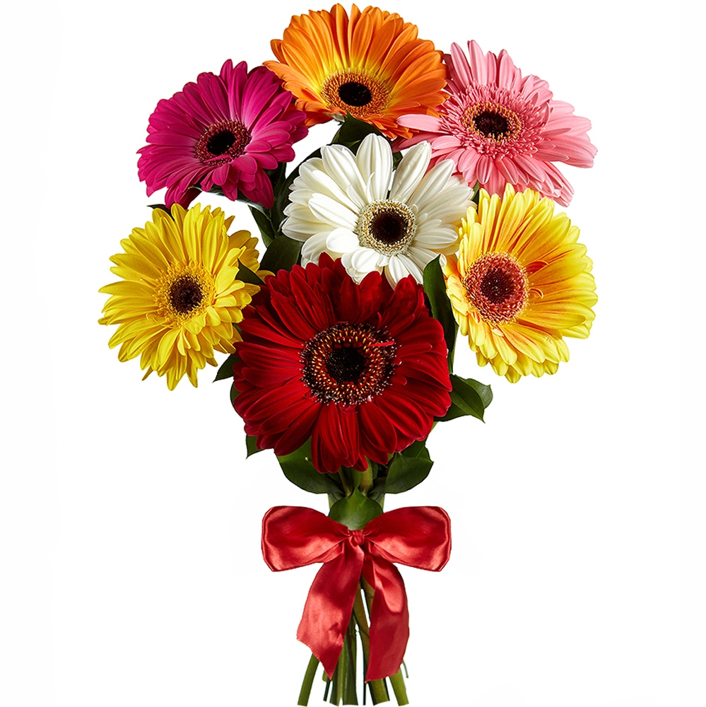

Флористика — это такое искусство, которое включает в себя умение составлять букеты и другие цветочные композиции из самых разнообразных материалов. В этом деле используются не только срезанные живые цветы, но и травы, листья, фрукты, сухие ветки.
С чего начать при составлении букетов из живых цветов?
Чтобы сделать качественную и эффектную композицию нужно придерживаться таких правил:
- Для женщин в основном создают округлые формы букетов, для мужчин — вытянутые, но размер композиции может зависеть от разных факторов.
- Составляя букет своими руками необходимо учитывать сочетание расцветок и размеров бутонов.
- Очень внимательно необходимо относиться к самому подбору растений. Некоторые могут быть несовместимыми или даже подавлять внешний вид друг друга. Составляя букеты, необходимо учитывать и интенсивность аромата, особенно если человек, которому он будет преподнесен, аллергик.
- Перед составлением композиции необходимо подготовить весь необходимый материал, также обрезать стебли под углом 45 градусов и предварительно поместить их в воду.
- Чтобы оформить созданный букет использовать можно любой сопутствующий материал, который продается в флористических отделах.
Подробнее
Материалы и инструменты
Для составления букетов понадобится:
- Ножницы
- Секатор
- Нож флориста
- Пистолет для термоклея с мощностью от 100 до 150 ватт.
- Плоскогубцы или круглогубцы.
- Кусачки для обрезки металлической проволоки.
- Цветовой круг.
- Обычный бытовой степлер поможет флористу закреплять детали, и соединять стыки бумажных упаковок.
Сочетание расцветок
Букеты, которые выполнены в одной цветовой расцветке, классифицируются как линейные. Во флористическом искусстве существует 4 цветовых гаммы, которые могут использовать начинающие специалисты, и при этом не переживать за конечный результат.
- Первая из них — контрастная, при которой в букете берут растения противоположные по цвету, такие элементы могут сделать композицию очень яркой, вызывающей и насыщенной.
- Аналогичная гамма составляется из близких тонов.
- Монохроматическая гамма предполагает также использование единого цвета, но с игрой с оттенками.
- Радужная гамма не имеет никаких ограничений, она может немного быть схожа с контрастной.
Оформление букетов
Для начинающих флористов не всегда полезно полагаться на свою интуицию, потому что даже свободное оформление поддается некоторым законом.
- самые крупные и яркие бутоны размещаются в центральной точке композиции, а светлые и небольшие — по краям, это позволяет сделать букет объемным;
- при использовании зелени для декорирования живых букетов использовать ее нужно в определенном количестве, чтобы она не уводила внимание от основных акцентов;
- при наличии соцветий, их лучше дистанцировать друг от друга, что позволяет им лучше просматриваться;
- при использовании разных элементов декорирования, лучше брать их в допустимом количестве, без перегибов;
- принудительное скручивание и сгибание растений лучше не применять, особенно в начале своей карьеры;
- чтобы составить букет из живых цветов, лучше использовать срезанные цветы с разной степенью раскрытия бутонов.
Правила, советы, лайфхаки
Золотое сечение или основное правило флористов.
Достигается соблюдением точных пропорций. Только в этом случае букет может иметь идеальный внешний вид.
Простые техники составления букетов
Бутоньерка — это классическая композиция, которая дополняет любой мужской костюм на
торжественном мероприятии.
Спиральная техника используется очень часто при создании
букетов.
Асимметричная техника является самой сложной и требует определенной фантазии и
знаний флористических основ.
Правила ухода за срезанными цветами
Желательно не применять водопроводную воду, потому что в ней используются вредные вещества, которые отрицательно сказываются на жизнеспособности цветов.
